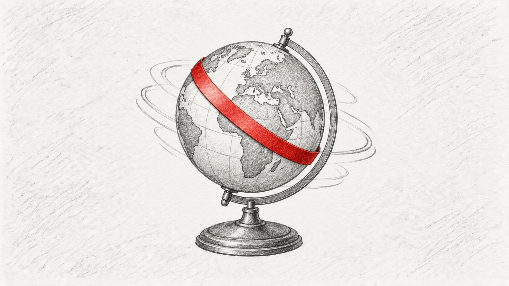

01From £3,500
Visual Development
Sprint
Campaign imagery, key visuals and look development — building a strong route, a repeatable visual system and finished hero frames.
GenAI / Art direction / 3D supportStart a brief →
Campaign imagery, visual development, storyboards and moving image — combining GenAI, motion and 3D with the craft to make it all hold together.
.jpg)
The useful thing about new tools isn't that they can make more. It's that they can compress the distance between a good idea and something convincing enough to judge.
Lambda combines senior creative direction with GenAI, motion, 3D and post-production craft to get ambitious work visible quickly — while keeping consistency, intent and finish intact.
Defined starting points make it easier to scope work quickly. Most projects can be briefed, reviewed and delivered asynchronously.
Campaign imagery, key visuals and look development — building a strong route, a repeatable visual system and finished hero frames.
Turn a script or loose idea into shots, sequences and production decisions before the expensive part starts.
Finished motion, CGI, compositing and campaign production when the idea needs to move beyond development into delivery.
Senior overflow support for creative teams that need specialist AI, motion, visual development or 3D capacity without adding headcount.
Different mediums. Same standard.
.jpg)
.jpg)
.jpg)
.jpg) View project ↗
View project ↗
Big-production visual impact created with a deliberately leaner AI-assisted approach — helping a challenger brand look anything but small.
.jpg) View project ↗
View project ↗
A hybrid workflow built around locked geometry, style systems and art direction — designed to hold characters, environments and a distinctive campaign world together across multiple generated scenes.

View project ↗Rapid storyboard development used to turn an abstract brand device into shots, sequences and motion behaviours — making the creative idea easier to judge before production.
v = c / n
Light changes speed as it moves through different media. Creative work does too. Budget, timeline, brand, technology and production reality aren't obstacles to work around — they're the conditions the idea has to move through.
Send the brief, budget and deadline. Calls are optional — most Lambda projects can be scoped and run asynchronously.
Start a project ↗